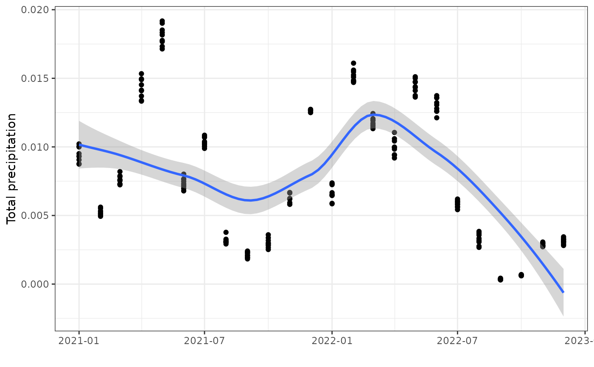
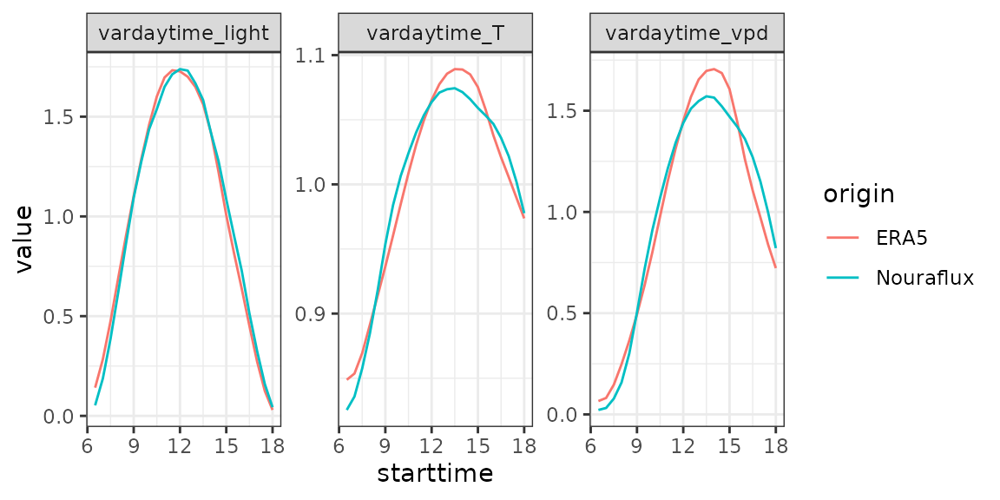
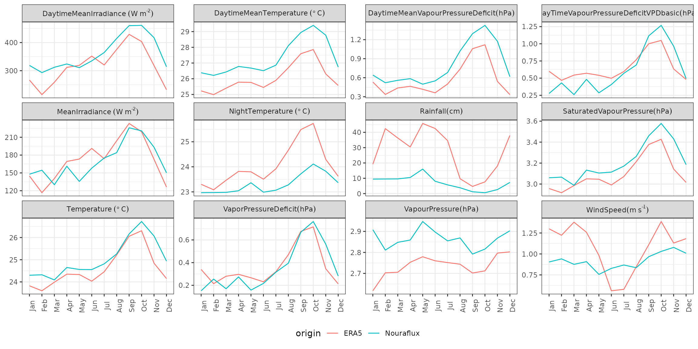

TROLL forest simulator relies on climate tables with half-hourly variations of a typical day and monthly variations of a typical year which are recycled through simulation days and years. Initially, TROLL climate tables were computed from the Nouraflux dataset. Variations in quantities of interests (temperatures, …) were averaged to the target resolution (half-hour for daily variation or month for monthly variation). The purpose of climate generation functions is to compute equivalent climate tables from the ERA5 land reanalysis dataset. With these functions, rcontroll users only need inventories and associated functional traits to run TROLL simulations.
This vignette requires numerous packages (12) to work. Some are not
integrated to rcontroll. Consequently, the corresponding
chunks are not compiled. But we strongly encourage users that want to
generate their climate data for TROLL to install all the packages and
run manually this vignette. All the packages role is detailed below.
Some may be avoided, only ecmwfr is mandatory to download
the ERA5 land data from Copernicus and obviously rcontroll
to convert the data to TROLL inputs.
knitr::opts_chunk$set(
comment = "#>"
)
library(terra) # to read the netCDF files
library(lubridate) # to deal with dates and times
library(dplyr) # to wrangle and tidy the data
library(tidyr) # to wrangle and tidy the data
library(ggplot2) # to make statis maps
library(gganimate) # to make a temporal gif of climate variation
library(rcontroll) # to generate TROLL climate inputs
library(ecmwfr) # to request data from Copernicus
library(osmdata) # to get bounding box from the study area
library(lutz) # to get time zone
library(nominatimlite) # to get coordinates from the study area
library(leaflet) # to make interactive maps
library(sf) # to extract coordinates from spatial objectsBefore you will be able to download any data you need to get a free personal account and accept the licence to use both ECMWF and Copernicus data.
First ECMWF:
Then Copernicus:
Next you can see your used id (UID) and API key on your account: https://cds.climate.copernicus.eu/user/ . You need to
manually set your account information in R using wf_set_key
from the ecmwfr package with the service
'cds'. Beware, you will need the ECMWF
password to connect to Copernicus services with
wf_set_key. Replace the user ID and API key in the
following chunk and run it.
wf_set_key(
user = "******",
key = "********-****-****-****-************",
service = "cds"
)You then define the location to retrieve climate data. Thanks to the
function getbb from the package osmdata you
can directly use the name of the entity, for example here the French
Guiana for which the default species data have been initialized. We
recommend using a large entity as the request preparation time is often
longer than the resulting object to download (see estimates below for
French Guiana).
getbb("French Guiana", format_out = "sf_polygon", limit = 1)$multipolygon %>%
leaflet() %>%
addTiles() %>%
addPolygons()you can then convert the coordinates into the desired request format
with gsub:
(coords <- gsub(",", "/", getbb("French Guiana",
format_out = "string", limit = 1
)))You need two types of product: (1) monthly averages by hour of day and (2) monthly averages at 00:00.
Now you can use the coordinates to build the request corresponding to the first set of data (monthly averages by hour of day) needed. For this example, we will limit our query to the coordinates of the Nouragues station in 2022 for a reduced output. But we encourage users to use both a larger spatial extent and a larger temporal extent.
request <- list(
"dataset_short_name" = "reanalysis-era5-land-monthly-means",
"format" = "netcdf",
"product_type" = "monthly_averaged_reanalysis_by_hour_of_day",
"variable" = c(
"10m_u_component_of_wind",
"10m_v_component_of_wind",
"2m_dewpoint_temperature",
"2m_temperature",
"surface_pressure",
"total_precipitation",
"surface_solar_radiation_downwards"
),
"month" = sprintf("%02d", 1:12),
"time" = sprintf("%02d:00", 0:23),
"year" = as.character(2022),
"target" = "ERA5land_hr_Nouragues_2022.nc",
"area" = "3.960414/-52.85468/4.160414/-52.65468"
)The names of product and variables can be found directly on the Copernicus website.
Finally you can use wf_request to download locally the
request with the registered user id (UID):
Request time: 0:05:07
Download size: 76.6 KB
ncfile <- wf_request(
user = "152268",
request = request,
transfer = TRUE,
path = ".",
verbose = FALSE
)You can follow your request here : https://cds.climate.copernicus.eu/cdsapp#!/yourrequests .
As the resquest can be very long you can play with the
time_outoption inwf_request. By default it is set to 1 hour, but the request may take longer. We recommand either expanding the time out to expected request time, but you will block you R session (can be useful on cluster if you don’t want manual intervention). Or on the oppposite setting a short time out. Thenwf_requestis only used to make the request. And you can download later when ready your request on the Copernicus website (can be useful on local session to avoid blocking the rsession).
The result of the request is included in the package external data
(system.file("extdata", "ERA5land_hr_Nouragues_2022.nc", package = "rcontroll"),
example of use below).
You can do the same for the second set of data (monthly averages) needed. For this example, we will limit our query to the coordinates of the Nouragues station in 2021 and 2022 for a reduced output. But we encourage users to use both a larger spatial extent and a larger temporal extent.
request <- list(
"dataset_short_name" = "reanalysis-era5-land-monthly-means",
"format" = "netcdf",
"product_type" = "monthly_averaged_reanalysis", "time" = "00:00",
"variable" = c(
"10m_u_component_of_wind",
"10m_v_component_of_wind",
"2m_dewpoint_temperature",
"2m_temperature",
"surface_pressure",
"total_precipitation",
"surface_solar_radiation_downwards"
),
"month" = sprintf("%02d", 1:12),
"time" = sprintf("%02d:00", 0:23),
"year" = as.character(2021:2022),
"target" = "ERA5land_mth_Nouragues_2021_2022.nc",
"area" = "3.960414/-52.85468/4.160414/-52.65468"
)Finally you can use wf_request to download locally the
request with the registered user id (UID):
Request time: 0:00:53
Download size: 9.0 KB
ncfile <- wf_request(
user = "152268",
request = request,
transfer = TRUE,
path = ".",
verbose = FALSE
)The result of the request is included in the package external data
(system.file("extdata", "ERA5land_mth_Nouragues_2021_2022.nc", package = "rcontroll"),
example of use below).
You can have a look to the resulting ERA5 land data. For instance
here we consolidate the data as a table using dplyr:
test_r <- suppressWarnings(rast(
system.file("extdata",
"ERA5land_mth_Nouragues_2021_2022.nc",
package = "rcontroll"
)
))
test <- suppressWarnings(as.data.frame(test_r, xy = TRUE)) %>%
gather("variable", "value", -x, -y) %>%
group_by(x, y) %>%
mutate(date = rep(as_date(terra::time(test_r)))) %>%
separate(variable, c("variable", "t"), sep = "_(?=\\d)") %>%
select(-t) %>%
separate(variable, c("variable", "expver"), sep = "_expver=") %>%
group_by(x, y, date, variable) %>%
summarise(value = mean(value, na.rm = TRUE), .groups = "drop") %>%
spread(variable, value) %>%
arrange(date)You can then plot the result as a static figure for a chosen year and
month using ggplot:
ggplot(test, aes(date, tp)) +
geom_point() +
geom_smooth() +
theme_bw() +
xlab("") +
ylab("Total precipitation")#> `geom_smooth()` using method = 'loess' and formula = 'y ~ x'
Next you need coordinates of the location where you want to run your
TROLL simulations to extract the data from downloaded ERA5-land data to
TROLL climate data. We will use here the coordinates from the Reserve
naturelle des Nouragues where the functional data have been partly
collected from. For that nominatimlite provide a useful
function called geo_lite_sf to easily geocode
locations:
geo_lite_sf("Réserve naturelle des nouragues, 97301, Régina") %>%
leaflet() %>%
addTiles() %>%
addPolygons(data = getbb("French Guiana",
format_out = "sf_polygon",
limit = 1
)$multipolygon) %>%
addCircleMarkers(col = "red")You can extract corresponding coordinates using
st_coordinates from sf:
(coords <- geo_lite_sf("Réserve naturelle des nouragues, 97301, Régina") %>%
st_coordinates())You will also need the corresponding time zone for time correction as
ERA5-land is giving us time in UTC. For that you can use the
tz_lookup_coords function from the package
lutz:
(tz <- tz_lookup_coords(
lon = coords[1],
lat = coords[2], method = "accurate"
))We invite users to take advantage of geo_lite_sf and
tz_lookup_coords to retrieve the coordinates and time zone,
but we show an example with known values below. You can use the
generate_cliamte function inside TROLL to prepare
TROLL climatic data:
climate <- generate_climate(
x = -52.75468,
y = 4.060414,
tz = "America/Cayenne",
era5land_hour = system.file("extdata", "ERA5land_hr_Nouragues_2022.nc",
package = "rcontroll"
),
era5land_month = system.file("extdata", "ERA5land_mth_Nouragues_2021_2022.nc",
package = "rcontroll"
)
)And as expected you obtain inputs ready to run models:
#> starttime endtime vardaytime_light vardaytime_vpd vardaytime_T
#> 1 6.5 7.0 0.1413943 0.06585713 0.8487613
#> 2 7.0 7.5 0.2836340 0.08120617 0.8535856
#> 3 7.5 8.0 0.4756240 0.14679440 0.8693862
#> 4 8.0 8.5 0.6920539 0.24787386 0.8913729
#> 5 8.5 9.0 0.9026792 0.36424334 0.9137656
#> 6 9.0 9.5 1.1021304 0.49402285 0.9364671#> # A tibble: 6 × 12
#> Temperature DaytimeMeanTemperature NightTemperature Rainfall WindSpeed
#> <dbl> <dbl> <dbl> <dbl> <dbl>
#> 1 23.8 25.2 23.3 19.2 1.30
#> 2 23.6 25.0 23.1 42.4 1.22
#> 3 24.0 25.4 23.5 36.3 1.38
#> 4 24.3 25.8 23.8 30.4 1.26
#> 5 24.3 25.8 23.8 45.8 0.983
#> 6 24.0 25.4 23.5 42.5 0.561
#> # ℹ 7 more variables: DaytimeMeanIrradiance <dbl>, MeanIrradiance <dbl>,
#> # SaturatedVapourPressure <dbl>, VapourPressure <dbl>,
#> # VaporPressureDeficit <dbl>, DayTimeVapourPressureDeficitVPDbasic <dbl>,
#> # DaytimeMeanVapourPressureDeficit <dbl>Finally, we can compare obtained climatic data from ERA5-land with included data in the package grom the Nouraflux eddy tower:
data("TROLLv3_daytimevar")
list(
Nouraflux = TROLLv3_daytimevar,
ERA5 = climate$daytimevar
) %>%
bind_rows(.id = "origin") %>%
gather(variable, value, -starttime, -endtime, -origin) %>%
group_by(origin, variable) %>%
ggplot(aes(x = starttime, y = value, col = origin)) +
geom_line() +
facet_wrap(~variable, scales = "free_y") +
theme_bw()
data("TROLLv3_climatedaytime12")
list(
Nouraflux = TROLLv3_climatedaytime12,
ERA5 = climate$climatedaytime12
) %>%
bind_rows(.id = "origin") %>%
group_by(origin) %>%
mutate(order = 1:12) %>%
mutate(month = as.character(lubridate::month(1:12, label = TRUE))) %>%
gather(variable, value, -origin, -month, -order) %>%
mutate(variable = recode(variable,
"Temperature" = "Temperature~(degree~C)",
"DaytimeMeanTemperature" = "DaytimeMeanTemperature~(degree~C)",
"NightTemperature" = "NightTemperature~(degree~C)",
"Rainfall" = "Rainfall (cm)",
"WindSpeed" = "WindSpeed (m~s^{-1})",
"DaytimeMeanIrradiance" = "DaytimeMeanIrradiance~(W~m^{-2})",
"MeanIrradiance" = "MeanIrradiance~(W~m^{-2})",
"SaturatedVapourPressure" = "SaturatedVapourPressure (hPa)",
"VapourPressure" = "VapourPressure (hPa)",
"VaporPressureDeficit" = "VaporPressureDeficit (hPa)",
"DayTimeVapourPressureDeficitVPDbasic" =
"DayTimeVapourPressureDeficitVPDbasic (hPa)",
"DaytimeMeanVapourPressureDeficit" =
"DaytimeMeanVapourPressureDeficit (hPa)"
)) %>%
ggplot(aes(
x = reorder(month, order), y = value,
col = origin, group = origin
)) +
geom_line() +
facet_wrap(~variable, scales = "free_y", labeller = label_parsed) +
theme_bw() +
theme(
axis.title = element_blank(), axis.text.x = element_text(angle = 90),
legend.position = "bottom"
)
This is only R objects. generate_climate is running
fast. But in case you want to run multiple simulations at the same
location we recommend saving the corresponding files for later:
write_tsv(climate$daytimevar, "ERA5land_daytimevar.txt")
write_tsv(climate$climatedaytime12, "ERA5land_climatedaytime12.txt")